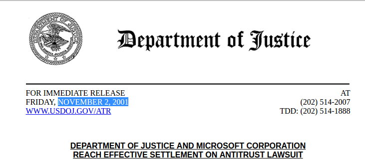
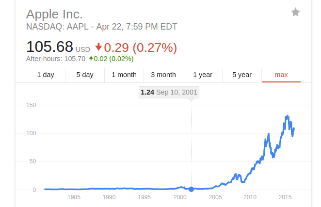

What is the Deep State?
- The term 'Deep State' was first used to refer to secret anti-democratic coalitions in Turkey unmasked in the 1996 Susurluk incident, a botched 'car crash' assassination.

The term is now also used to describe any semi-secret, unelected, elite group of people with power over world affairs.
What's the goal of the Deep State? To preserve the hidden power of the Deep State.
The Deep State is tacit, not explicit. You might be a deep state actor without even knowing it.
The Baby Boomer Deep State

The Baby Boomer Deep State
'Deep Events': the Footprints of the Deep State
The Deep State in a post Cold War world
In the 90s, despite attempts at destabilizing the world with the Gulf War and Asian Financial crisis , the Cabal was losing control.
The Internet, originally funded by ARPA in the 1960s, was also becoming a problem.
The Late 90's 'dot-com' Bubble
What we're told: irrational exuberance
What we're told: the technology wasn't ready yet
The reality: massive sabatoge of tech industry by the Deep State
Iridium Satellite Constellation -> iPhone
Pixelon -> YouTube
VA Linux -> Amazon Web Services
theGlobe -> (the) Facebook
Kozmo -> Uber
Flooz -> Bitcoin, Ethereum
GovWorks -> Palantir
All of these companies were being traded by citizens online, creating wealth for the middle class.
The Deep State attacked the tech industry by fanning tensions with China, discrediting honest startups, publicizing the Y2k 'bug'...
Finally, an anti-trust case against Microsoft eventually "popped" a manufactured "bubble" on March 20th, 2000.

Technocrats within the Deep State were angry about being stabbed in the back.
They were sick of the 'Cabal' that put an incompetent Bush scion in power.
The technocrats decided to take action.
9/11 was orchestrated by technocrats within the Deep State in order to take power from 'the Cabal'.
Deep State technocrats transformed Arab extremists into a decentralized network of terror cells.
The War on Terror would require unprecendented information technology programs and the spectacle would create a desire for mass social media.
What individual could plan such a massive undertaking with absolute secrecy? Who had the attention to detail?
Who had the resources, network and necessary Middle East connections?
Who was willing to transform the culture of an entire country?

Led by Steve Jobs.
Jobs' biological father was Abdulfattah Jandali, a wealthy Arab nationalist in exile.

The Cabal backed down.

Technocrats took control of the Deep State.

Constant survelliance took the place of intimidation and violence, most of the time.
The Deep State is flexible and seductive.
Many ambitious young people make faustian deals with the Deep State in order to achieve success.
Others are Deep State plants from birth.
Most of the time, nothing.
The Deep State doesn't have formal meetings or titles.
It doesn't have a symbol or crest.
It doesn't have a membership card.
Example: Michael Hastings
Covered Iraq War, Occupy Wall Street, PRISM.
About 15 hours before dying in a fiery car crash at about 4:30 a.m. in L.A., he sent an email to several colleagues that said the FBI was investigating him and he was "onto a big story."

"consistent with a car cyber attack"